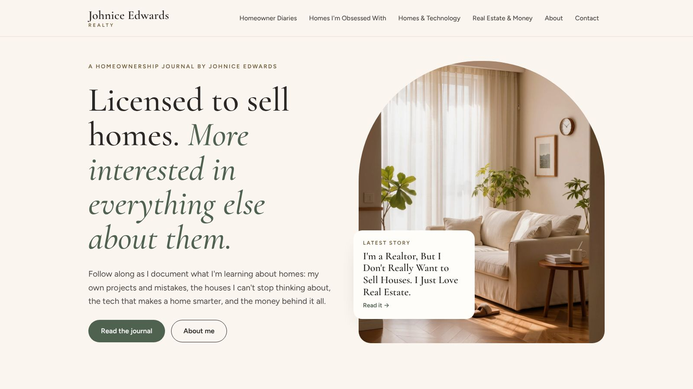
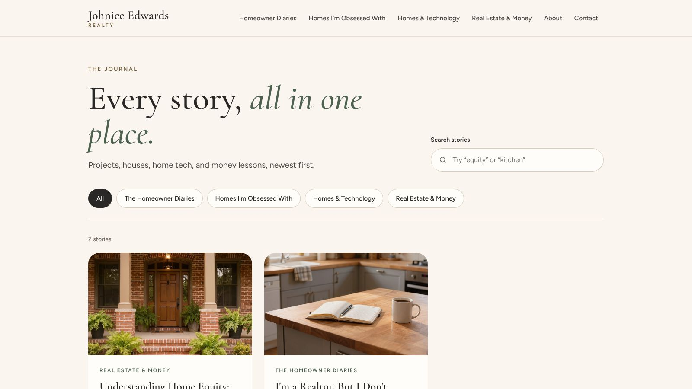

Johnice Edwards Realty
A homeownership journal on my own domain, with a data-driven article list, search, category pages and a working contact form.
Overview
Johnice Edwards Realty is a homeownership journal I run at johniceedwardsrealty.com. I'm a licensed real estate agent in Michigan, but the site isn't about listings. It's about everything else that comes with owning a home: projects, beautiful houses, home technology and the money side.

The idea
I wanted something different from a traditional real estate website: an educational journal where future buyers and current homeowners can find practical information, with room to grow into helpful tools later.
What it does
- A single article list powers the home page, the journal, four category pages, story counts and search.
- Search and category filters on the journal page.
- Contact and newsletter forms that send through Formspree, with client-side validation and clear success and error messages.
- Photo fallbacks: if an image is missing, a soft colored placeholder appears instead of a broken image.
- Custom domain on GitHub Pages, set up with A and CNAME records.

How I built it
Like this site, it's plain HTML, CSS and JavaScript hosted for free on GitHub Pages, built with the help of an AI coding assistant. The approach worked well enough that I reused it here: describe content once in a JavaScript list and let small scripts draw the pages.
Challenges and lessons
- DNS clicked for real. Pointing the domain at GitHub Pages turned A records, CNAMEs and TTLs from flashcard terms into things I've actually configured. I wrote it up in What Pointing a Domain at My Website Taught Me About DNS.
- Forms without a server. A static site has no backend, so form submissions go to a form service. That's a good trade-off for a small site, with limits worth knowing (like monthly submission caps).
- Legal details matter. As a licensed agent, I needed licensing disclosures, a privacy policy and terms on the site.